Calistung Dasar (Baca, Tulis, Hitung)
Membangun fondasi membaca, menulis, dan berhitung permulaan secara sabar dan menyenangkan bagi anak usia dini sebelum melangkah ke level lanjutan.
Building Character, Growing Hope.
Pusat bimbingan belajar non-formal interaktif yang memadukan fondasi dasar Calistung (Baca, Tulis, Hitung), penguasaan Matematika, Bahasa Inggris aktif, dan pembentukan karakter mulia sejak dini.
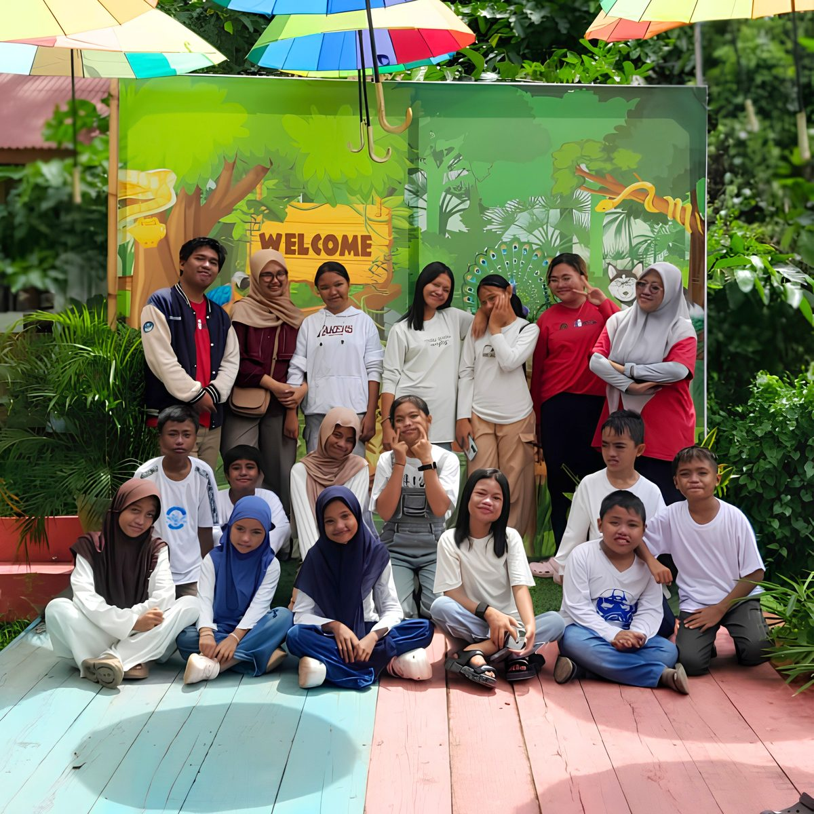
Pojok Hope menghadirkan suasana belajar yang merangsang rasa ingin tahu anak-anak melalui metode interaktif yang dirancang khusus.
Membangun fondasi membaca, menulis, dan berhitung permulaan secara sabar dan menyenangkan bagi anak usia dini sebelum melangkah ke level lanjutan.
Membiasakan empati, kerja keras, integritas, dan kejujuran sebagai fondasi anak menyongsong masa depan cemerlang.
Mengupas logika matematika berjenjang (Beginner, Intermediate, Advanced) secara visual dan interaktif tanpa rasa takut.
Meningkatkan kepercayaan diri anak berbicara bahasa Inggris melalui metode storytelling, percakapan, dan role-play.
Momen-momen keseruan belajar, bermain, dan pembentukan karakter anak-anak di School of Character - Pojok Hope.
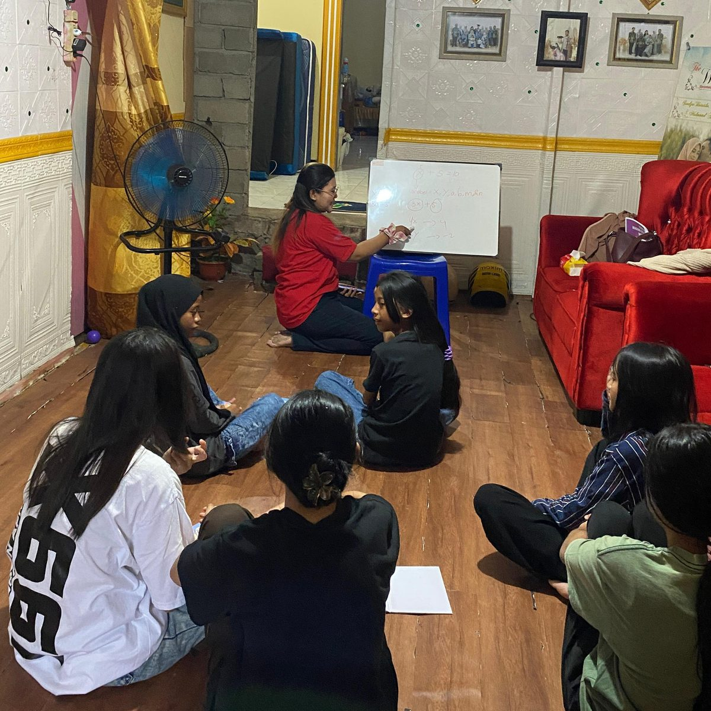
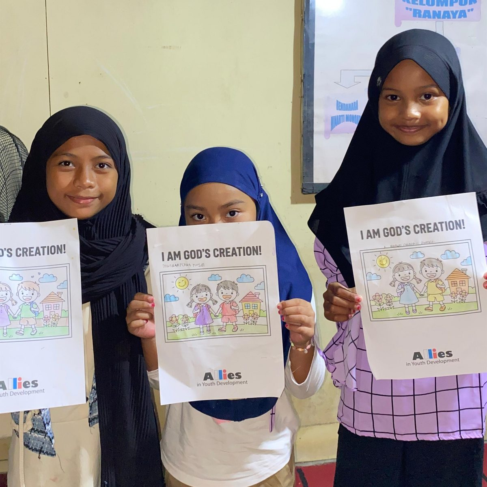
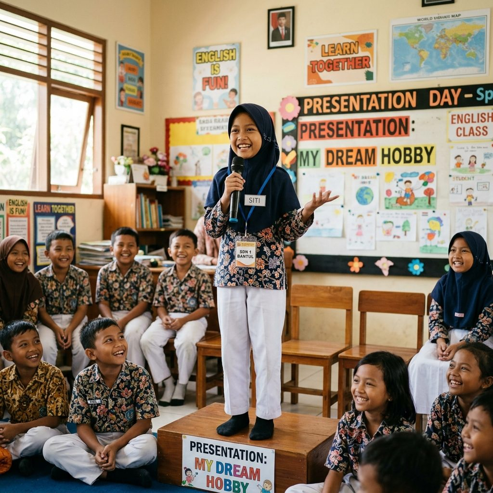
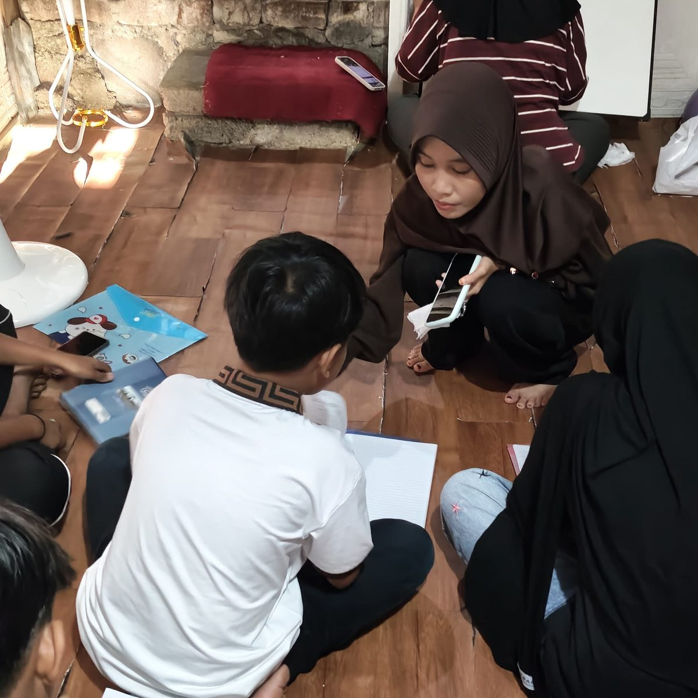
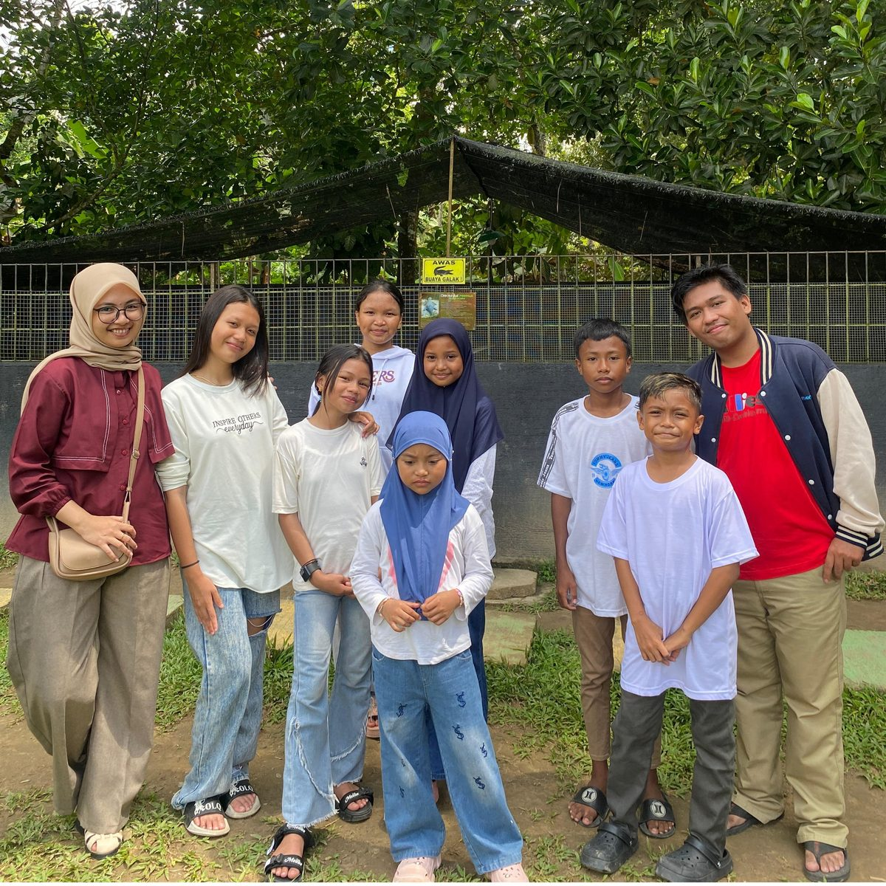
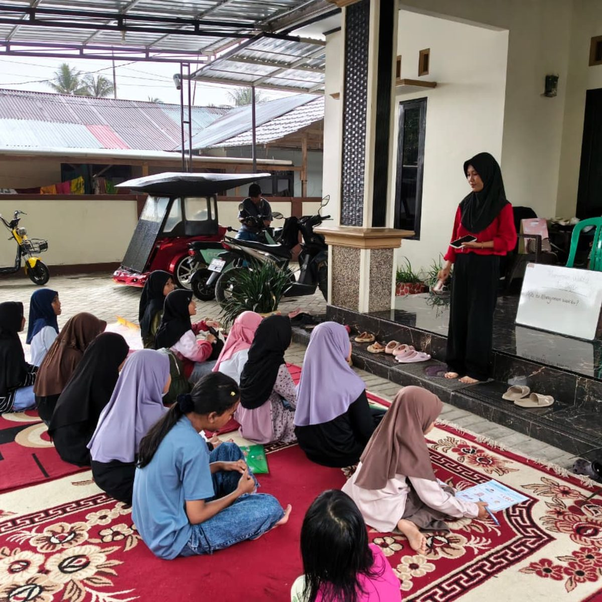
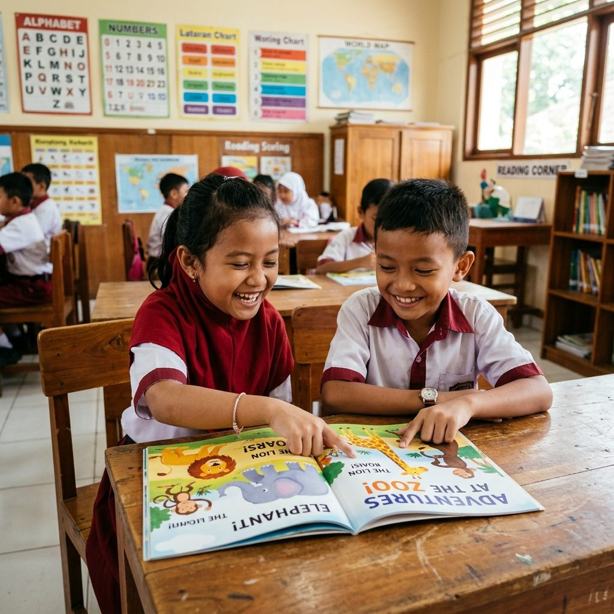
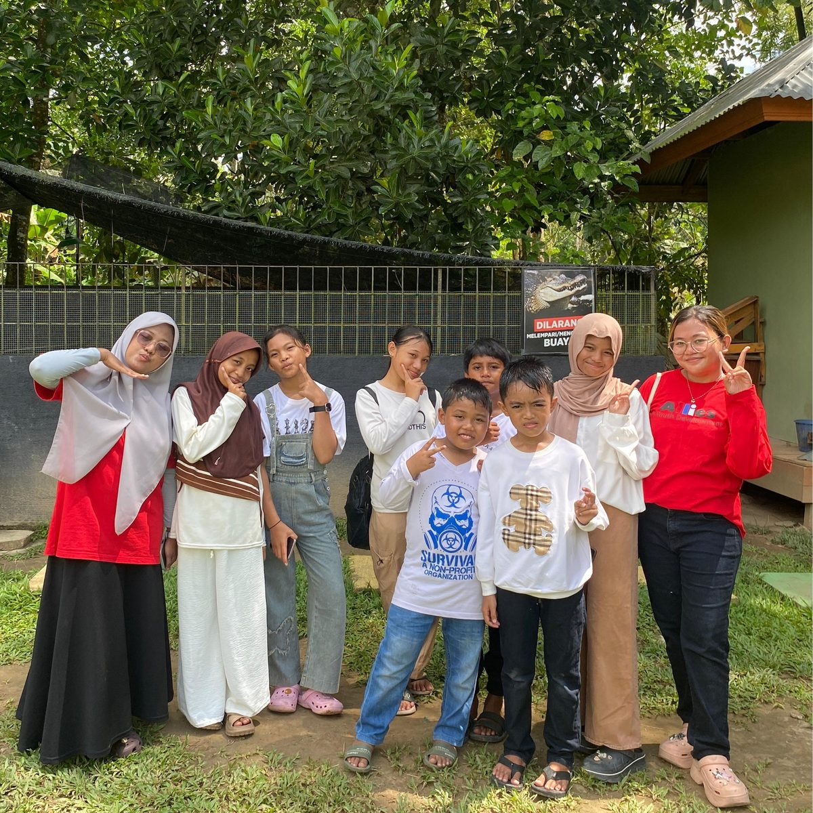
Kami membuka pintu kolaborasi seluas-luasnya bagi donatur perorangan, komunitas, organisasi kepemudaan, maupun instansi/perusahaan yang ingin berinvestasi dalam pembentukan karakter dan kecerdasan anak-anak Gorontalo.

Buku bacaan cerita bergambar, ensiklopedia anak, alat tulis, pensil warna, dan media peraga matematika.
Dukungan snack sehat belajar, sarana belajar ruang kelas, dan subsidi kegiatan Outdoor Learning di alam bebas.
Menjadi pengajar tamu, volunteer pendamping kelas karakter, atau mitra pengabdian masyarakat kampus/organisasi.
Dapatkan jawaban instan dan transparan seputar kurikulum pembelajaran, peranan kelas fondasi Calistung, jadwal bergantian, pendaftaran siswa baru, hingga transparansi rapor karakter anak melalui asisten interaktif kami.
Pilih topik pertanyaan di sebelah kanan untuk membaca penjelasan kurikulum dan teknis belajar dalam sekejap.
Pelajari peran kelas fondasi Calistung hingga transparansi pemantauan rapor semesteran siap cetak A4 di dashboard.
Dikelola dengan penuh kepedulian bersama pengajar relawan dan mitra sponsor untuk seluruh anak Kabila, Gorontalo.
Pilihan program komprehensif kami dirancang untuk membekali masa depan anak dengan keterampilan kognitif dan perilaku berkarakter mulia.
Membimbing pengenalan huruf, fonik bacaan, kelancaran menulis, dan berhitung dasar untuk anak usia dini secara sabar, interaktif, dan penuh kegembiraan sebelum melangkah ke level lanjutan.
Pembiasaan 4 pilar utama: Empati, Kejujuran, Tanggung Jawab, dan Sikap Hormat melalui studi kasus, simulasi sosial, dan refleksi bersama untuk membentuk akhlak mulia.
Mempelajari konsep logika aritmatika, visualisasi angka, penalaran kreatif, dan pemecahan masalah bertahap tanpa rasa cemas melalui media manipulatif dan puzzle.
Mengembangkan kepercayaan diri berkomunikasi aktif dalam bahasa Inggris lewat storytelling, percakapan sehari-hari, reading comprehension, dan role-play tanpa paksaan.
Belajar tidak harus selalu terpaku di dalam ruang kelas! Melalui program Outdoor Learning di alam terbuka yang asri, anak-anak diajak berinteraksi langsung dengan lingkungan sekitar untuk melatih kemandirian, kerja sama tim, keberanian, dan kepedulian terhadap alam secara nyata.
SoC menawarkan program bimbingan komprehensif untuk mengembangkan potensi anak. Kami percaya bahwa setiap anak memiliki bakat unik yang dapat tumbuh maksimal melalui bimbingan yang tepat, lingkungan yang mendukung, dan pembelajaran yang menyenangkan.
Bergabung Bersama Kami!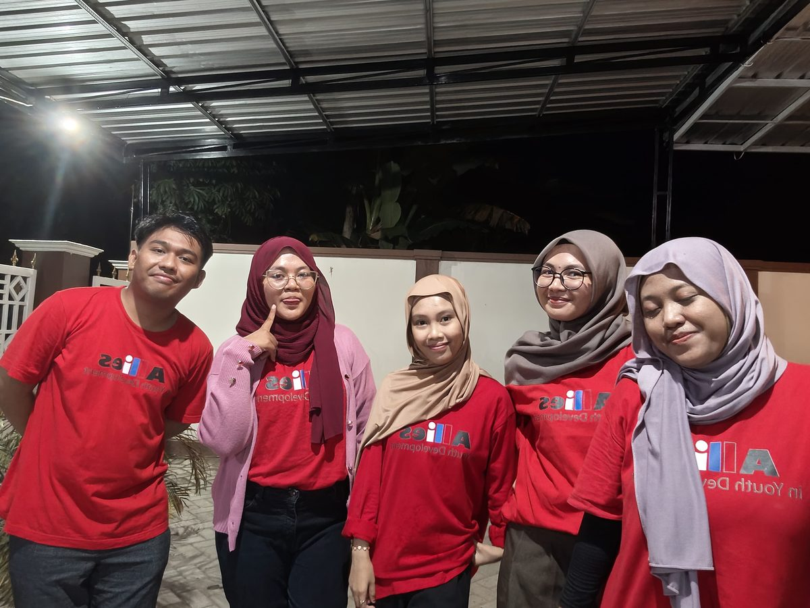
"Membangun Generasi Emas yang Berkarakter & Berhati Mulia dari Gorontalo."
Selamat datang di School of Character - Pojok Hope. Sebagai pendiri, dedikasi saya adalah menciptakan lingkungan belajar alternatif yang tidak hanya mengasah ketajaman kognitif anak melalui Matematika dan Bahasa Inggris, melainkan juga menanamkan fondasi karakter yang kokoh sejak dini.
SoC hadir bukan hanya untuk membentuk kemampuan, tetapi juga menanamkan karakter, kepedulian, dan semangat bertumbuh bersama. Melalui visi dan misi SoC, kami ingin menghadirkan lingkungan belajar yang bukan hanya mendidik Intelektual, tetapi juga menyentuh hati dan membentuk karakter anak dengan penuh kasih
Kami percaya bahwa kecerdasan intelektual tanpa disertai akhlak mulia akan kehilangan arah. Oleh karena itu, melalui metode *Fun Learning*, kami merancang setiap interaksi kelas agar merangsang empati, kejujuran, sopan santun, dan tanggung jawab sosial pada diri anak secara alami tanpa tekanan.
Kami berharap kehadiran Pojok Hope dapat menjadi oase pendidikan yang menumbuhkan harapan baru bagi generasi masa depan Gorontalo.
School of Character - Pojok Hope adalah sebuah lembaga bimbingan belajar non-formal yang berfokus pada pembentukan karakter anak secara holistik. Sekolah ini hadir sebagai ruang belajar yang aman, menyenangkan, dan bermakna bagi anak-anak untuk mempelajari dasar Calistung (Baca, Tulis, Hitung), Matematika, Bahasa Inggris aktif, dan nilai-nilai moral.
Didirikan dengan tujuan menjembatani kebutuhan akademis dengan perkembangan emosional anak, kami berkomitmen untuk menciptakan suasana kelas bebas tekanan di mana anak-anak dapat tumbuh menjadi pribadi berkarakter mulia.
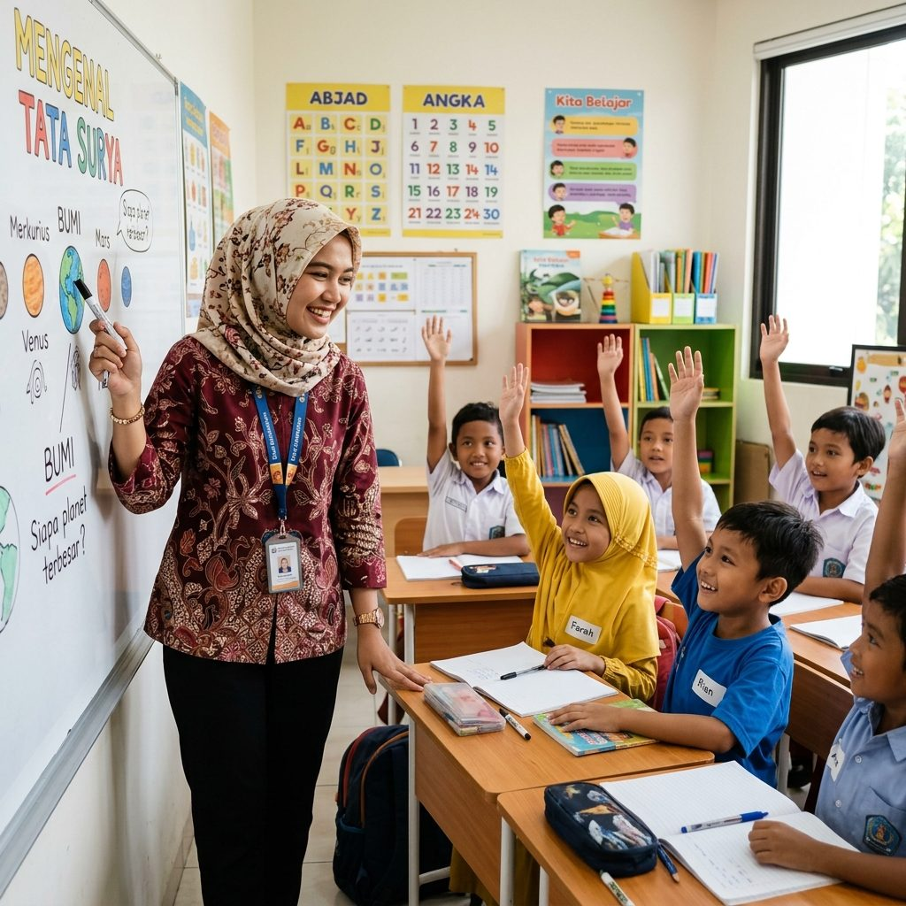
Membentuk generasi emas Indonesia yang cerdas kognitif dan berakhlak mulia melalui pengajaran terapan.
Menjadi pusat bimbingan belajar alternatif terdepan yang tidak hanya mengutamakan kecerdasan akademis, melainkan juga menanamkan karakter berbudi pekerti luhur demi mewujudkan masa depan anak yang penuh harapan.
Kami mengundang Bapak/Ibu untuk berkunjung langsung dan melihat aktivitas pembelajaran menyenangkan kami di alamat:
Jln Pasar Minggu, Kec Kabila, Desa Dutohe, Gorontalo.
Jam Operasional: Senin - Sabtu (14:00 - 17:30 WITA)
Kami berterima kasih atas dukungan dari berbagai lembaga dan komunitas yang percaya pada misi School of Character.
Pilih kategori bergabung di bawah ini. Setiap pilihan akan membuka formulir pendaftaran resmi.
Buka jalan emas perkembangan kognitif dan pembentukan karakter putra-putri Anda. Kelas bimbingan belajar dasar Calistung (Baca, Tulis, Hitung), Matematika, Bahasa Inggris, dan Karakter dengan pendekatan Fun Learning.
Daftar Siswa BaruSalurkan minat mengajar Anda untuk memajukan pendidikan karakter di Gorontalo. Bergabunglah sebagai pengajar Calistung, Matematika, Bahasa Inggris, atau Pembina Karakter.
Lamar Sebagai GuruJadilah relawan pendukung kegiatan Outdoor Learning, pengajar tamu, atau penyedia donasi alat edukatif untuk menumbuhkan harapan anak-anak di pedesaan Kabila.
Daftar Relawan / VolunteerMasuk ke sistem raport karakter dan jadwal kelas